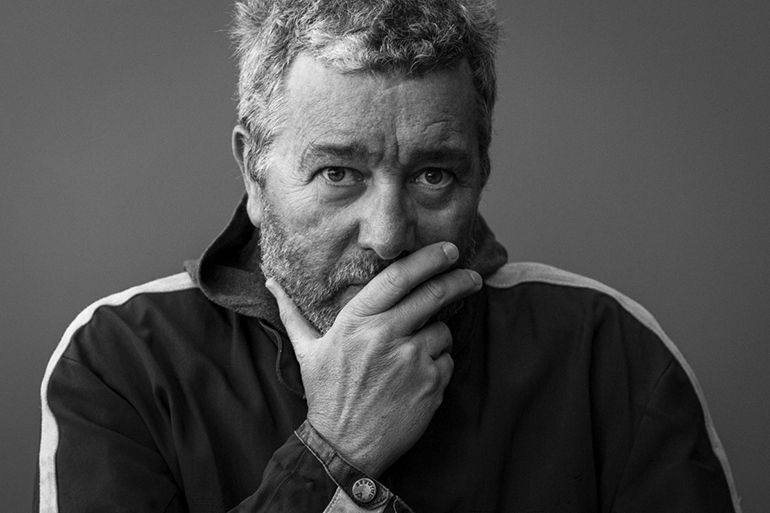

In a career stretching over forty years, renowned designer Philippe Starck is responsible for some of the world's most iconic designs, including many of the most reproduced and celebrated chairs of our time.
But how does a designer with a reputation for challenging expectations continue to push against predictability?

My organic brain cannot imagine what an artificial brain can do...
Design Challenge
To get out of his comfort zone, Starck approahed a familiar problem with an unfamiliar tool.
He would design a chair using the least amount of material possible, using AI as his design partner.
An AI that could provide a new perspective on what a chair could be. A design partner without aany of Starack's design bias or instincts, and no knowledge of humanity's 4600 year history with chairs.
Starck sought to create something that could only be made at this point in time.
A time shaped by algorithms and a concern for our environmental impact
A moment where for the first time, human ingenuity alone may not be enough to rise to the challenges in front of us.
To get out of his comfort zone, Starck approahed a familiar problem with an unfamiliar tool.
He would design a chair using the least amount of material possible, using AI as his design partner.
An AI that could provide a new perspective on what a chair could be. A design partner without aany of Starack's design bias or instincts, and no knowledge of humanity's 4600 year history with chairs.
Starck sought to create something that could only be made at this point in time.
A time shaped by algorithms and a concern for our environmental impact
A moment where for the first time, human ingenuity alone may not be enough to rise to the challenges in front of us.
Design Goals & Constraints
- Body and Chair Contact
How much weight must it support?
Design Goals & Constraints
- Body and Chair Contact
- Position of Legs
Where will the chair contact the floor?
Design Goals & Constraints
- Body and Chair Contact
- Position of Legs
- Define the Forces
How much weight must it support?
Design Goals & Constraints
- Body and Chair Contact
- Position of Legs
- Define the Forces
- Suggest a Volume
What is the maximum volume of space a chair would ever take up?
What legal safety standards mustt be accounted for?
With the answers to these questions acting as guidelines, the AI can begin generating potential solutions.
What legal safety standards mustt be accounted for?
With the answers to these questions acting as guidelines, the AI can begin generating potential solutions.

Slide to rotate model
Material Loss
Here we see how the AI moves and removes material while respecting the guidelines established by the designer.
The parts of the chair that appear blue represent areas of low stress, indicating where material could possibly be removed without impacting performance.
Here we see how the AI moves and removes material while respecting the guidelines established by the designer.
The parts of the chair that appear blue represent areas of low stress, indicating where material could possibly be removed without impacting performance.
The AI can generate as many design options as Starck needs, many more than anyone could think of on their own.
Early on, the most promising designs are singled out and given small adjustments to steer the results toward better outcomes.
As the software begins to learn our preferences, it begins to include design nuances that would be difficult to express–the slope of a chair leg, simpler forms over complex shapes. Over time, it becomes better able to anticipate Starck’s preferences.
A handful of the best results are then evaluated on their strength, ease of manufacturing, and their suitability for different materials.
The Starck design team takes the raw results generated by the AI and adjusts the forms to meet proper ergonomics and apply Starck’s signature curves.
Stress simulations were run on the final model, not just to test for safety and durability, but to make sure needless material hadn’t been added.

Swipe to spin model
The Starck design team takes the raw results generated by the AI an adjusts the forms to meet proper ergonomics and apply Starck's signature curves.
After putting their finishing touches on the proposed design, the next step is to prepare it for manufacturing.
The Italian product company Kartell joins the collaboration and explores options with Starck’s design team.
In the spirit of the design’s effort to do more with less, the team at Kartell figured out how to produce the chair using their own byproduct manufacturing material.
It is the first time in the 70 year history of Kartell that a product is made from 100% recycled plastics.
If a chair design is a reflection of its place in history, what does this chair say about us?
A chair that is digitally optimized to be as strong as possible, using the least amount of material necessary.
A chair made possible with AI, but impossible to produce without the guidance and collaboration of human designers.
It’s a stunning example of a design that’s both uniquely shaped by AI, and yet undeniably a product of Starck’s aesthetic.
More than just a proof of concept, Starck’s A.I. chair was launched in 2019 during the Salone del Mobile in Milan. It’s now available in Kartell stores worldwide.
Next Story: How can we explore life
on other planets?
on other planets?